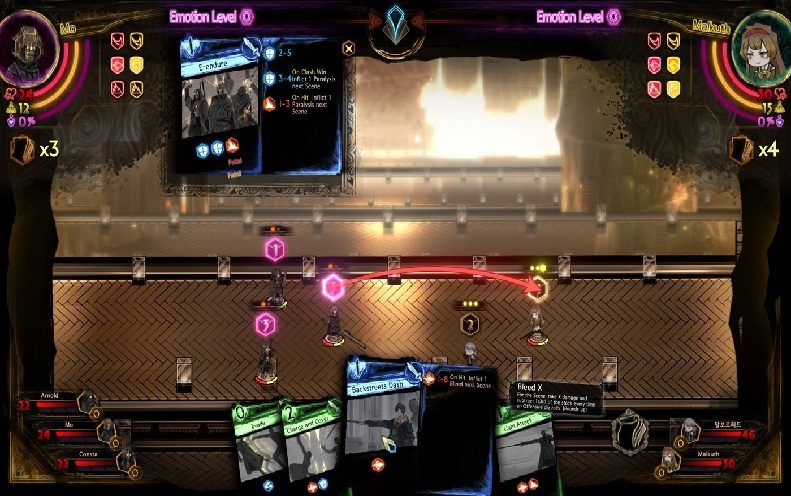

is an indie deck-building role-playing game developed and published by Project Moon. Initially released for Windows and Xbox One on August 10, 2021, it is a sequel to the 2018 game Lobotomy Corporation. The game generally received positive reviews for PC, but mixed to negative reviews on console. A sequel, Limbus Company, was released in 2023 for Windows, iOS, and Android devices. The light novel The Distortion Detective is a side story that takes place during the events of Library of Ruina. Another light novel, Leviathan, was illustrated as a manga, taking place between Library of Ruina's true ending and the start of Limbus Company.
Library of Ruina combines deck-building, role-playing, and turn-based strategy. Players control Librarians and use cards called Combat Pages to fight Guests. Each card contains dice that determine the outcome of attacks and defensive actions during clashes. Players must build effective decks, manage resources, and use different abilities and status effects strategically. Defeated Guests are turned into Books, which can be used to obtain new cards and strengthen the Librarians. As the game progresses, battles become more challenging and require players to adapt their strategies to different enemies.
